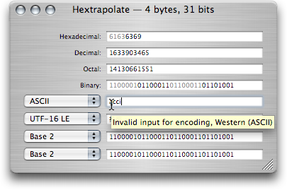

Text encoding errors
Hextrapolate only allows you to type numbers and letters that are valid for the selected text encoding.
If a character you type is rejected Hextrapolate will show information about it in a tool-tip:

Hextrapolate only allows you to type numbers and letters that are valid for the selected text encoding.
If a character you type is rejected Hextrapolate will show information about it in a tool-tip: